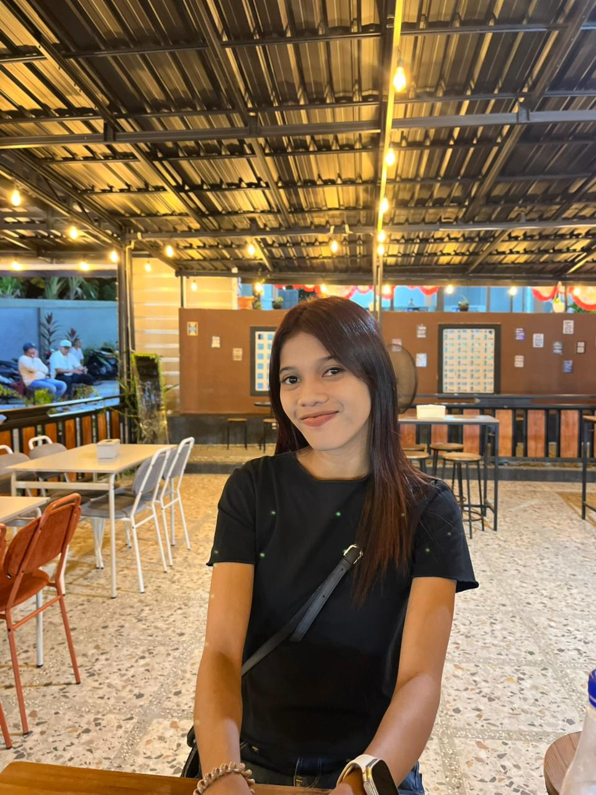

Selamat datang di website portofolio saya
Saya adalah seorang mahasiswa semester 4 . saya kuliah di INSTITUT AGAMA KRISTEN NEGERI AMBON saya dari Fakultas Sains Dan Teknologi Program Studi Sistem Informasi Saya suka belajar hal baru dan mengembangkan kemampuan saya.
SD INPRES 35 PASSO (2011-2017)
SMP NEGERI 20 AMBON (2018-2020)
SMA NEGERI 14 AMBON (2021-2023)
INSTITUT AGAMA KRISTEN NEGERI AMBON
Pengalaman di Kampung (Negeri) Itawaka, Pulau Saparua, Maluku, menawarkan perpaduan keindahan alam laut dan kekayaan budaya lokal. Wisatawan dapat menikmati snorkeling dan diving di perairan dengan gradasi warna indah, terumbu karang, serta ikan langka. Selain itu, pengunjung dapat mempelajari tradisi budaya lokal yang kental.